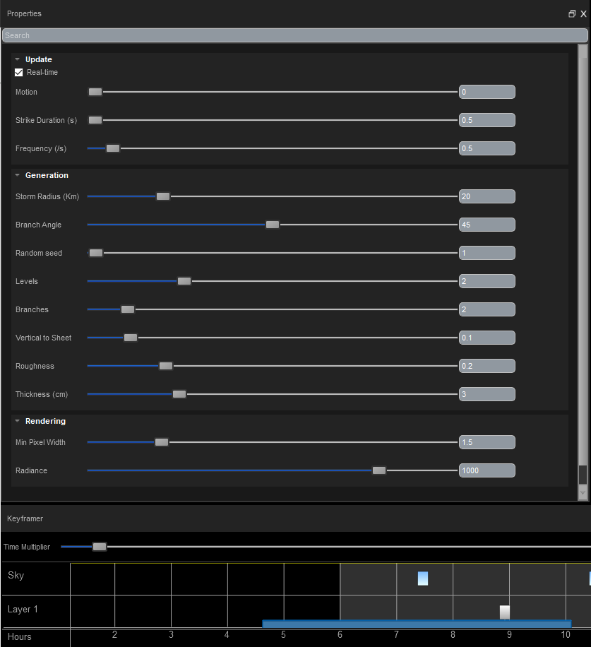

Storms Tutorial¶
Editing Storms in the Sequencer¶
To create a storm in the sequencer, simply right click on the 3D cloud layer and select “Add storm”. Clicking on the keyframe will show a selection of storm properties that can be changed. To set the storm’s start time, end time and duration, simply drag out its edges horizontally to encompass what part of the timeline is required. Make sure there are enough clouds to produce lightning while the storm is active. You can also drag the storm keyframe by clicking the centre.
Unity¶
Editing Storms through Scripting¶
As with cloud and sky keyframes, to get/set properties of a storm keyframe, you will first need to get its uid. To do this, use GetStormUidByIndex(int index) or GetStormUidAtTime(float time).
Once you have the storm keyframe’s uid, you can get and set its float and int properties using GetStormFloat(uint uid, string name), SetStormFloat(uint uid, string name, float value), GetStormInt(uint uid, string name) and SetStormInt(uint uid, string name, int value).
For information on these functions, see Scripting. The tables below show the storm properties (named as they appear in the sequencer), along with the matching name string to use for scripting. Note: Parameters that are Bools in the Sequencer are treated as Ints in scripting, where 0 = false and 1 = true.